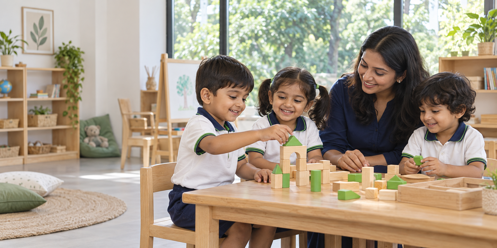
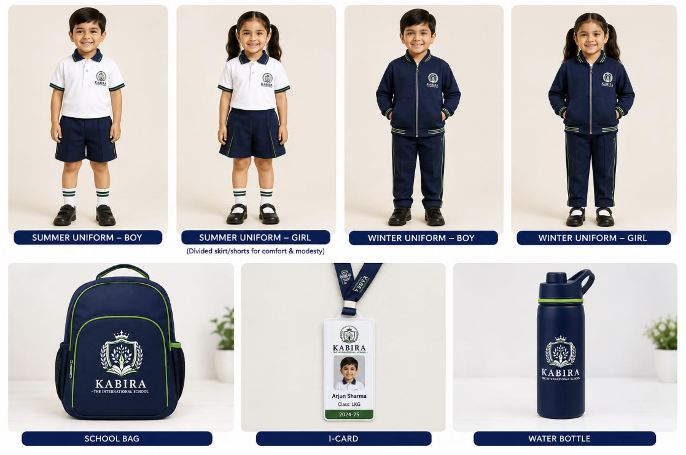

Known. Understood.
Encouraged.
Individual attention that honours your child's personality, pace and potential.

THE INTERNATIONAL PRESCHOOL · ZIRAKPUR
A joyful place to learn. A nurturing place to grow.
A little world where your child belongs.
Rooted in values. Growing with wonder.
ZIRAKPUR, PUNJABWELCOME TO KABIRA INTERNATIONAL
Before a child learns to read the world,
they need to feel at home in it.
At Kabira, we bring the warmth of a home together with thoughtful early-years education. Every question, little discovery and first friendship has a place here.
Through play, exploration and meaningful Indian values, we help children grow in confidence, creativity and kindness—at their own pace.
Step into their little worldIndividual attention that honours your child's personality, pace and potential.
Play, stories and real experiences make learning meaningful and memorable.
Confidence and curiosity grow alongside kindness, respect and Indian traditions.
A nurturing environment guided by 28 years of educational experience.
ROOM TO GROW, AT EVERY STAGE
From their first day away from home to their next big adventure. A thoughtful programme for every early-years milestone.
A gentle first hello to a world of learning.
Making connections, asking questions, finding a voice.
Growing confidence. Building new possibilities.
A confident, happy step towards primary school.
Our journey begins with preschool and daycare. New classes will be added each year as our school grows.
THE KABIRA LEARNING EXPERIENCE
Some of the biggest lessons begin with the smallest moments. A story shared. A seed planted. An idea brought to life.
Sensory activities, movement and nature spark curiosity and coordination.
Phonics, conversation and storytelling build language and confidence.
Art, music, craft and imaginative play make room for original thinking.
INSPIRED BY WISDOM. CREATED FOR CHILDHOOD.
The name Kabira is inspired by the timeless wisdom of Sant Kabir—simplicity, truth, compassion and equality. For us, education is also learning how to treat others and understand ourselves.
Through stories, conversations and everyday moments, children experience values they can carry for life.
CARE THAT GOES BEYOND THE CLASSROOM
For families who need care beyond school hours, our daycare offers a comfortable, nurturing rhythm of play, rest and individual attention.
Discover daycare at your visitDAYCARE AT KABIRA
7:00 AM — 7:00 PM
Time to play. Space to rest. Care throughout.
A DAY IN THEIR LITTLE WORLD
Preschool: approximately 9:00 AM – 12:30 PM.
A gentle rhythm, with room for discovery.
Free exploration, warm welcomes and circle time with friends.
Language, numbers and hands-on activities that bring ideas to life.
Snack time, outdoor movement and learning to care for one another.
Music, art and stories before a positive goodbye.
YEARS IN EDUCATION.
ONE BEAUTIFUL VISION.
A MESSAGE FROM OUR EDUCATIONAL LEADER
“Every child needs to feel loved and understood before meaningful learning can begin.”
We want our children to speak confidently, think independently, respect others and carry beautiful memories of their early school years.
PARENTS & TEACHERS. ONE TEAM.
Our campus is being designed around little learners, with welcoming classrooms, age-appropriate furniture, activity corners and daycare rest facilities. Supervision, hygiene and child-friendly safety practices are central to our approach.
Regular progress updates, parent-teacher interactions and developmental observations help families understand how their child is growing. School celebrations and parent participation bring our community together.
Children develop differently. Teachers encourage each child's interests and emerging skills, balancing academic readiness with creativity, emotional wellbeing, movement and play.
A LITTLE SENSE OF BELONGING
Our navy, green and white identity carries through the Kabira uniform collection, bringing our school family together.
School uniform and accessory designs
ADMISSIONS OPEN · ACADEMIC SESSION 2026–27
Pre-Nursery · Nursery · LKG · UKG · Daycare
Come experience KabiraExplore the environment and get to know our approach.
Share your child's needs and find the right programme.
Complete registration and begin your Kabira journey.
A FEW THINGS YOU MAY BE WONDERING
We currently offer Pre-Nursery (2+ years), Nursery (3+), LKG (4+), UKG (5+) and Daycare. New classes will be added each year as Kabira grows.
Regular preschool hours are approximately 9:00 AM to 12:30 PM. Daycare is available from 7:00 AM to 7:00 PM. Please discuss your family's requirements during your visit.
Our programme combines age-appropriate language, phonics and number concepts with creative play, movement, sensory exploration and social-emotional learning. Childhood is never rushed.
Yes. We encourage families to visit the campus, experience the environment and discuss their child's needs with our admission counsellor before registration. You can find our address and directions below.
You may be asked for your child's birth certificate, child and parent photographs, address proof, Aadhaar copies where applicable, previous school records if any and relevant medical information. The school will confirm the requirements during registration.
WE'D LOVE TO WELCOME YOUR FAMILY
Meet us, explore the learning spaces and picture
your little one's first day at Kabira.
MAKE THE MOST OF YOUR VISIT
Our admission counsellor can help you explore: